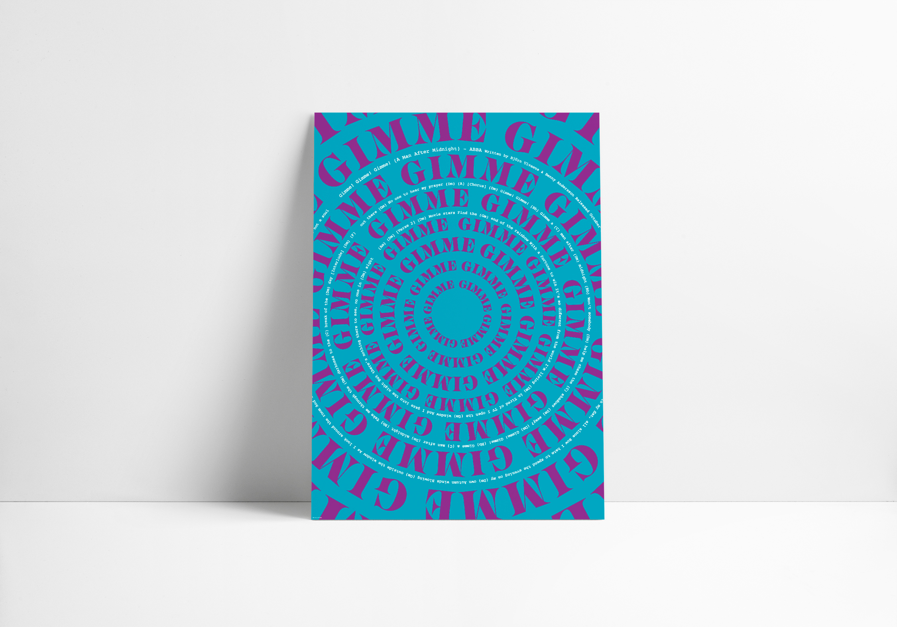
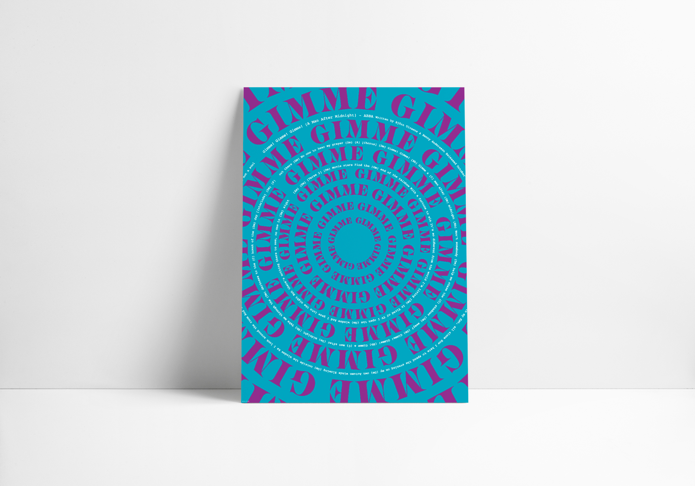
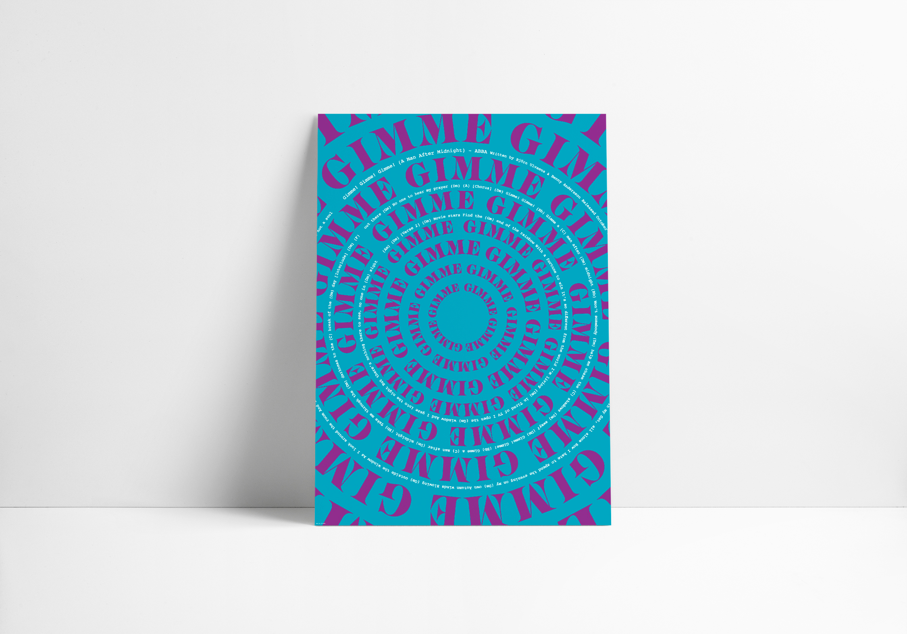

Typographic poster for the band ABBA

Typographic poster for the band ABBA
Typographic posters for the band ABBA
For this project we had to design three posters to convey the identity of one or more songs, using only typographic elements and two colors, other to the one of the paper.
I worked on three ABBA songs: Gimme! Gimme! Gimme!, Dancing Queen e Mamma Mia.
I used the kitsch aesthetics of both ABBA and the 70s as a reference. Through the typographic composition I wanted to underline how the band's stage presence overshadows the songs' tecnical composition.
Typographic Design
Proff. M. Bernstein, D. Mottes
A.A. 2018/2019
Project by:
Marta Sironi